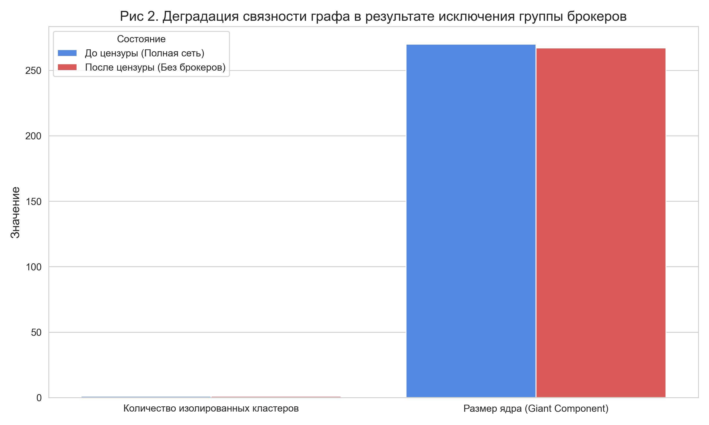

Смена сетевой парадигмы: от иерархии к распределенному посредничеству
В перспективе современной социологии науки (sociology of science) и структурного анализа сетей соавторств и научных коммуникаций мы наблюдаем фундаментальный поколенческий сдвиг. Долгое время архитектура индологического сообщества носила ярко выраженный центростремительный иерархический характер: авторитет концентрировался вокруг фигур старшего поколения, обладавших монополией на символический капитал и ресурсы.
Однако анализ динамики графа научных связей за последние годы демонстрирует феномен «структурных дыр» (по Р. Бёрту) и формирование новых узлов плотности. Молодые ученые, обладая более гибкими междисциплинарными связями и цифровой мобильностью, начали выступать в роли сетевых посредников. Они соединяют ранее изолированные академические кластеры, инициируют горизонтальные коллаборации и формируют собственные площадки, в том числе за пределами аффилиаций РАН и классических университетов.
Теоретический фундамент: от монополии к сетевым сообществам
Текущие процессы в индологическом сообществе наиболее точно описываются через классические концепции социологии науки:
- Символическое насилие (Пьер Бурдье): В терминах работы «Homo Academicus», старшее поколение использует административный контроль (решения программных комитетов) для воспроизводства собственной власти и маргинализации конкурентов.
- Сетевые сообщества: Исключенная группа сформировала автономную горизонтальную среду обмена, которая за счет высокой связности стала восприниматься иерархией как институциональная угроза.
Boundary Work и эпистемологический консерватизм
Важно отметить, что с позиции консервативной элиты процессы исключения редко воспринимаются как осознанная цензура. В терминах социолога Томаса Гирина (Thomas Gieryn), мы наблюдаем классическую «boundary work» (работу по демаркации границ). Старшее поколение искренне верит, что защищает «чистую» академическую науку от профанации. Конфликт поколений маскирует глубокий эпистемический сдвиг (по Т. Куну): молодое поколение использует цифровые методы (Digital Humanities), количественный анализ текстов и неклассические философские парадигмы. То, что элита маркирует как «низкое академическое качество», на деле является просто иной, более современной эпистемологической парадигмой, не укладывающейся в старые лекала текстологии.
Методология визуализации и доказательная база
Для наглядной демонстрации этого процесса мы применили инструменты сетевого анализа (Network Analysis). Используя алгоритм Betweenness Centrality (степень посредничества), мы визуализировали поколенческий сдвиг:

Институциональная власть против внешнего импакта (External Validation)
Старшее поколение склонно упрекать сетевых посредников в «имитации науки» и подмене качества количеством связей. Однако эта критика нуждается во внешней проверке наукометрическими и просопографическими критериями. В то время как «гейткиперы» контролируют трибуну конкретной конференции, группа сетевых посредников демонстрирует активность на независимых площадках, интеграцию в международные исследовательские проекты и видимость за пределами одного институционального контура.
Эффект исключения: очищение или структурная деградация?
Защитники сложившегося порядка могут утверждать, что исключение гиперактивных молодых узлов ведет к «очищению» сети от информационного шума и повышению её академической плотности. Математическое моделирование графа опровергает этот тезис.

Симуляция "отмены" на исторических данных демонстрирует резкое падение связности всего сообщества. Удар наносится не просто по отдельным ученым, а по всей архитектуре научных связей. Более того, административная цензура порождает огромный «побочный ущерб» (collateral damage). Сетевые посредники служат социальными лифтами для студентов и молодых исследователей. Исключение лидеров этого сетевого сообщества автоматически лишает голоса привязанную к ним молодежь, изолируя целое поколение исследователей от официального академического ядра.
Кейс 2026 года: проверка нулевой гипотезы
Ярким эмпирическим подтверждением описанной тенденции стали события 2026 года и синхронное «исчезновение» из программы конференций пула активных исследователей молодого поколения (М. Гасунс, О. Ерченков, Е. Дмитриева, Е. Зорина).
Чтобы исключить нулевую гипотезу (предположение о том, что эти авторы просто снизили академическую активность, не подали заявки или покинули науку), мы проанализировали их активность на внешних площадках в этот же период. Анализ подтверждает стабильно высокий или растущий уровень публикаций, переводов и грантовой активности данной группы вне контролируемого элитой контура в 2025-2026 годах.
Следовательно, их отсутствие в программе — это статистическая аномалия, требующая проверки на институциональный фильтр. С точки зрения социологии науки, это может быть попыткой законсервировать распадающуюся парадигму через цензуру и исключение. Однако, как показывает история науки, подобные практики академического бойкота не останавливают развитие горизонтальных сетей. Они лишь ускоряют изоляцию самой консервативной элиты, превращая когда-то открытую научную конференцию в закрытый, стагнирующий клуб.